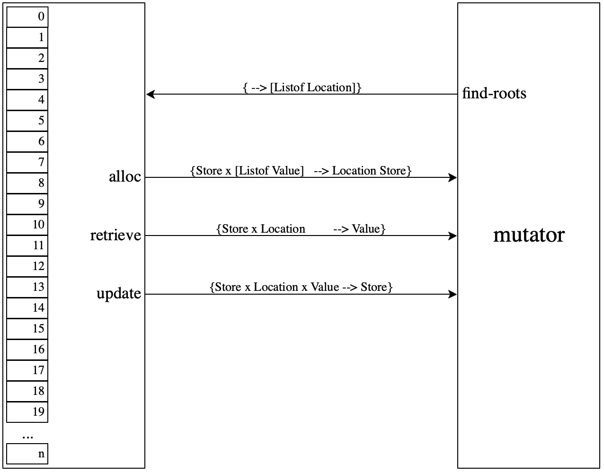

7.6.0.19
8 — Model vs Reality
Due Friday, 13 March, 6am ~~ Note the shift in due date.
The purpose of this homework problem is to relate your model of
programming language concepts to the reality of your chosen
programming language.
Warning This assignment requires planning ahead. Starting on
Wednesday or Thursday after spring break won’t do. In terms of labor, this
assignment should demand about as much as one of the prior heavy-load
assignments.
Background
Scientists develop models of aspects of nature: the motion of planets and
airplanes; the interaction of atoms and molecules; the workings of a cell;
the weather; the climate; and so on. In this context, the point of a model
is to predict the behavior of the relevant aspect of nature, to answer
questions about it, e.g.,
where will Venus be in the sky at midnight on 4 July 2020?
how does oxygen combine with two hydrogen atoms to form a water molecule?
what role does messenger RNA play?
will it rain tomorrow?
what will be the average temperature in the year 2020? (asked in
2010It is amazing how wrong they were.)
A good model delivers accurate and precise predictions, say the model of
planet movements, or accurate prediction intervals with a confidence level,
say, climate predictions. Neither kind of model is worth anything if it
doesn’t come with “precision statement” or “confidence intervals.” If a
model is no good, scientists observe and adjust.
Engineers design artifacts (subject to economic constraints) via the
construction of models: planes, trains, cars, dams, houses, etc. When people
(workers, plant engineers) then build the artifact, they consult the model
and measure the relevant properties of the artifact to ensure the latter
satisfies all of the constraints of the former. For example,
the curvature of the aircraft wing
the force on connectors between train cars
the engine’s horsepower
the dam’s holding capacity
the slope of the house’s roof
A well-built artifact measures up to the model within small
tolerances. If an artifact does not measure up to the model, people change
the artifact until it does.
Your goal is to measure your interpreter’s ability to predict
your chosen language’s behavior within certain tolerances.
Delivery
Deliver your solutions in a folder called 8 in your
github repo:
|
8/ |
xtranslate |
memo.md |
Other/ |
ITests/ |
make_exe |
Prelude/ |
[Makefile] |
A name ending in / is a folder, and indentation means “contained in the
closest folder listed above the current name.”
Programming Task
“Measuring” the accuracy of a model is a non-trivial task. Since you have
an executable model—the interpreter—the best way to measure it is to
run both your model and your programming language on the same test cases.
The problem is that the inputs to your models are JSON “thingies” and the
inputs to your compiler are “real” programs. Fortunately, the problem is
easily solvable because every XPAL expression has a rather
straightforward transliteration to a program in one of your chosen
languages.
Task 1 The translations from
XPAL to your chosen language
will rely on a prelude library. Depending on your language, this prelude
may have to contain a number of definitions but in all likelihood it will
contain a definition of
Cell to implement
@,
!, and
=. For example, the Java prelude may contain the following:
class Cell<T> { |
private T c; |
Cell(T c) { this.c = c; } |
|
T retrieve() { return c; } |
T assign(T nu) { T tmp = c; this.c = nu; return tmp; } |
} |
Place the prelude into the ITests/ directory in a Prelude/
sub-folder.

Figure 100: Comparing language implementations and models
Task 2 Design a “transpiler” from XPAL to
your chosen programming language. The given XPAL program is of type
"int". When run, the generated output
program—linked to your Prelude/—must display the same output
as the interpretation of the given XPAL expression. See
figure 100 for a diagrammatic overview of the idea.
Hint Those of you whose transpiler outputs typed code may
wish to start from the type checker from 6 — Type Checking, add the code “cheap
polymorphism,” and translate from there—after type checking. If your
transpiler targets untyped code, you just want to strip those
types. Before you re-use your code, make sure to address all failures.
Your generated code may not call your
XPAL interpreter.
The translation may include lines that make the generated program easily
runnable. For example, a transpiler from XPAL to Typed Racket may
generate the following output (regardless of input)
| #! /bin/sh |
| #| -*- racket -*- |
| exec racket -t |
| |# |
| #lang racket |
| |
| (displayln 42) |
Note that this output is guaranteed to be wrong for all test cases :-).
Task 3 We have placed 197 XPAL integration tests for
7 — Type Sound Interpretation in a shared repository for you to peruse. Your
task is to run these test cases through your transpiler (if they
are of type int), generate the executables with the help of your
make_exe script Makefile (see below), and
compare every result with the one that the interpreter produces. For every
chosen language, it should be easily possible to get an 80–90%
agreement rate easily, given interpreters that pass the tests. Once you
have achieved a good agreement rate, evaluate the failures.
Turn your evaluation into a memo (markdown style) of at most two pages. The
memo must report the agreement rate and must classify the failures
according to the following schema:
some aspect of the model is inappropriate for your chosen programming
language
the combination of transpiler and language implementation (compiler
or interpreter for your chosen language) cannot properly cope with this input
For each class of failure, list all failing test cases and articulate a
reason why they fit into this categroy. Writing “given more time, our
transpiler would be perfect” is not a reason. Ditto for “our
model is totally broken.” By contrast, “there is absolutely no big-int
package for our chosen language” would be a good reason—if it were true.
Place it in 8/ and call it memo.md.
Testing Task
Develop the test harness generator xtranslate. The
executable consumes an XPAL expression and generates a program in your
chosen programming language. The generated program may refer to the files in
Prelude/. As always, the test harness consumes XPAL
programs from STDIN and sends its translation toSTDOUT.
Our test framework will supply the public test inputs plus ten extras. It
will place the generated programs in ITests/ as n.in for
some natural number n.
You may wish to (re)read Make. Place a simple bash
script called make_exe into ITests/. The script creates executables
from all generated programs in this directory. For a file named
n.in, the script generates an executable called n.
The script may simply copy and chmod the existing files so that
they become executable. Or, it may run a compiler such as javac on
the files and redirect the output to the appropriate file.
You may place an optional Makefile into ITests/ in support of
make_exe.
Once your executables exist, our test framework will run all of them and
compare the output printed to STDIN STDOUT with the expected output.